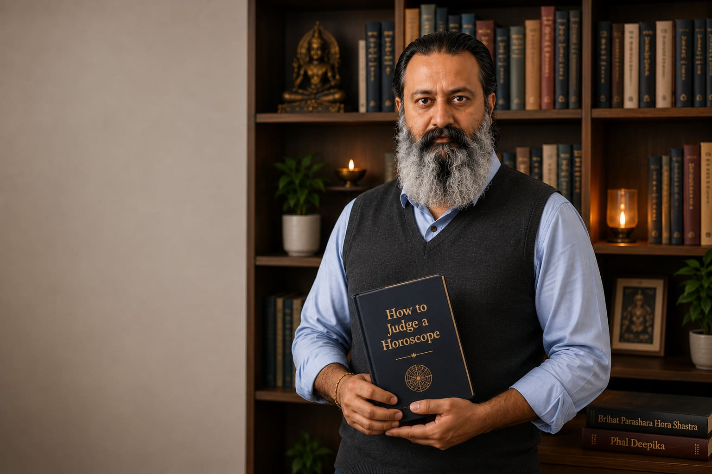

About
Behind Every Horoscope is a Human Story
Astrology, for me, has never been about predicting every event. It has always been about understanding people and helping them navigate life with greater clarity.

My Journey
I spent nearly two decades in software engineering — solving complex problems through logic, analysis and structured thinking.
Alongside that work, a deeper curiosity remained: why do similar people experience such different outcomes? Is there a larger pattern behind life’s unfolding?
Those questions led me to Classical Vedic Astrology. Curiosity became disciplined study — classical texts, careful observation, and learning from respected teachers. I still study, because every chart teaches something new.
Engineer Turned Astrologer
The engineering background is not a previous chapter — it shapes how I work today. Structure, logic and verification meet classical Parashara principles. The aim is the same in both worlds: understand the system, then explain it clearly.
You should leave a conversation understanding the reasoning — not only hearing a conclusion.
Why Classical Vedic Astrology?
My work is rooted in the Parashara tradition. It offers a structured framework for planetary influences, timing and tendencies — and it rewards careful analysis rather than quick conclusions.
Engineering taught me to question assumptions and verify before concluding. I bring the same mindset to every chart: principles first, clear explanations, and recommendations only when they genuinely help.
What You Can Expect
Honest conversation. Clear reasoning. Practical recommendations when they add value — lifestyle, awareness, simple classical practices — never fear-based packages or pressure.
The full principles behind this approach are on the Philosophy page.
I am also writing a book on Classical Vedic Astrology for absolute beginners — basic concepts explained in careful detail.